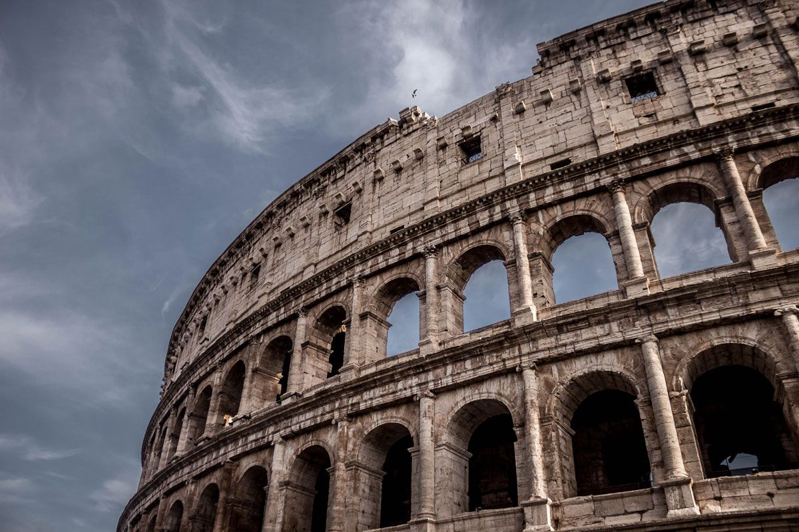

The Legacy of Roman Architecture
By
Marcus Vitruvius · · 8 min read
Introduction
Roman architecture stands as one of humanity's greatest achievements, blending practicality with beauty in a way no civilization had managed before. From aqueducts carrying clean water across mountain ranges to amphitheatres seating tens of thousands, the Romans turned ambition into stone — and much of that stone still stands today.
More than just impressive buildings, Roman architecture shaped how we think about public space, civic life, and engineering. The principles they developed over centuries continue to influence architects and city planners around the world.
Quick Facts
| Structure | Location | Completed | Notable For |
|---|---|---|---|
| The Pantheon | Rome, Italy | ~125 AD | Largest unreinforced concrete dome |
| The Colosseum | Rome, Italy | ~80 AD | Held up to 80,000 spectators |
| Pont du Gard | Nîmes, France | ~50 AD | Three-tiered aqueduct bridge |
| Trajan's Market | Rome, Italy | ~110 AD | World's first shopping mall |
Engineering Marvels
The Romans didn't just build large structures — they engineered them with remarkable intelligence and durability. Their development of concrete, known as opus caementicium, revolutionized construction by allowing buildings to be molded into complex shapes like arches, vaults, and domes.
This innovation made it possible to create massive and long-lasting structures such as the Pantheon, whose dome remains the largest unreinforced concrete dome in the world. By adjusting their concrete mixture with lighter materials like pumice, they were able to reduce weight without sacrificing strength.
Roman engineering extended beyond monumental buildings to practical infrastructure. Their aqueducts transported water across long distances using carefully calculated gradients, ensuring a steady and reliable water supply for cities.
They also built extensive road networks using layered construction techniques, making the roads strong, durable, and efficient for travel and trade. Structures like the Colosseum further demonstrated their mastery, using arches and concrete to support massive crowds.
What makes Roman engineering truly impressive is its longevity. Many of these structures have survived for over two thousand years, continuing to inspire modern architects and engineers today.
/* Roman arch formula — strength through geometry */
function buildArch(keystone, voussoirs) {
const compression = distributeLoad(keystone, voussoirs);
return compression === "balanced" ? "Arch stands forever" : "Rebuild";
}Cultural Influence
Roman design principles influenced centuries of architecture across Europe and beyond. The Renaissance drew heavily on Roman forms — columns, pediments, domes, and arches reappeared in the great cathedrals and civic buildings of the 15th and 16th centuries.
Even today, government buildings, banks, universities, and museums around the world echo Roman aesthetics. The United States Capitol, the British Museum, and countless courthouses worldwide bear unmistakable Roman influence — a reminder that great ideas, like good concrete, tend to last.
"Architecture is a visual art, and the buildings speak for themselves."
— Julia Morgan
A Lasting Legacy
Few civilizations have left a mark on human history as deep as Rome's. Their architectural achievements were not accidents — they were the result of disciplined experimentation, careful observation, and a willingness to push the boundaries of what materials could do.
As we continue to build cities, design public spaces, and solve engineering challenges, we remain, in many ways, students of Rome.
Comments (3)
Chinedu
Amazing insights into Roman engineering! I had no idea the Pantheon's dome was still a record-holder.
Adeola
This really helped me understand ancient construction techniques. The quick facts table was especially useful!
Attah
The engineering was really amazing. It's incredible that structures built 2,000 years ago still stand today.